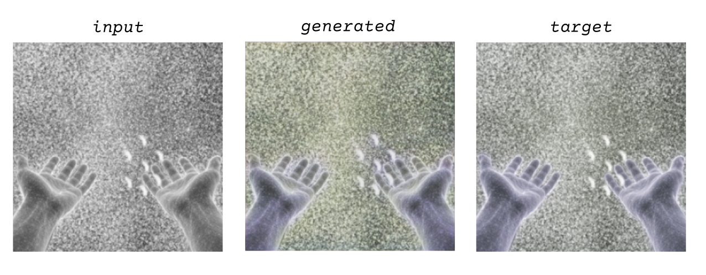
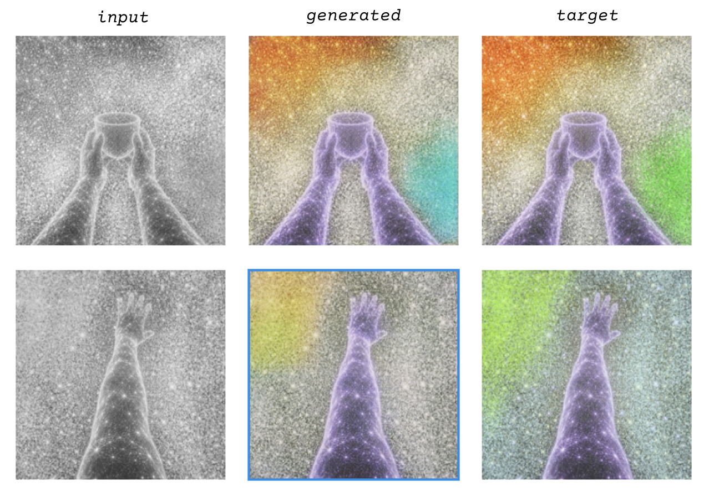

M. Leona Godin
Blind visionscapes
From my perspective as a blind person Aarati’s questions immediately made me think of testimonies I’ve been casually collecting for a number of years regarding what blind people see. They come from books and from friends, some examples include…
Jorge Luis Borges: “One of the colors that the blind—or at least this blind man—do not see is black; another is red. Le rouge et le noir are the colors denied us. I, who was accustomed to sleeping in total darkness, was bothered for a long time at having to sleep in this world of mist, in the greenish or bluish mist, vaguely luminous, which is the world of the blind. … The world of the blind is not the night that people imagine.”
James Tate Hill: “swirling, kaleidoscopic fragments of green, yellow, and magenta, moving like a time-lapsed image of a distant galaxy…”
Plus others—including my own not-black visionscape: Gentle hallucinations--Charles Bonnet Syndrome—undulating over a vibrating snow fuzz, often with blotches or washes of color—neon pink or electric teal.”
Phantom limb phenomenon
Probably that would have been enough, but I wanted to also try to represent something even stranger—what we sometimes call the phantom limb phenomenon…
Oliver Sacks: “At one time I had a large blind area, a so-called scotoma, in my right eye, and objects would disappear in it. I remember once scotomizing my foot so that I didn't see anything below mid shin, but then as I twiddled my toes, A sort of strange protoplasmic effulgence appeared. Sparkling. And which gradually formed itself into the semblance of a foot—it was a reasonably good foot …So there was this visual phantom.”
John Dugdale: “It's such a marvelous feeling. I remember being in church at St. Luke in the Fields and I looked down at my hands and it was almost like I could see an x-ray of them.”

Dataset style guide
I created a style guide for ChatGPT/DALL-E to create some images that included both the first-person phantom limbs and the overall visionscapes. This turned out to be more challenging and time-consuming than I imagined—especially the first-person POV. not least because I could not trust ChatGPT’s descriptions of what it made. I enlisted Claude to describe and to help me refine my instructions.
I also asked my partner, Alabaster Rhumb to add some color blotches, though I realized after the fact that I neglected to tell him that they never drifted offscreen so to speak—they occupy quadrants but are always complete blotches—a good reminder that it’s hard to know what the parameters are until people or machines start interpreting your words in ways you couldn’t have anticipated!
Because this phenomenon is tied so closely with proprioception, I thought at first I would use a gesture transformation, but then I wasn’t sure what kind of input I would use. And I also wasn’t sure what the message behind the Pix2Pix would be. Then I thought that using very dark greyscale would be more to the point, but I didn’t quite get there. So I just did greyscale and I think the transformation ended up being too easy for the model .
I’m holding out the possibility of returning to my pict model with black or nearly black photographs. With little to no visual input, would the machine start hallucinating phantom limbs and colorful visionscapes, too?
